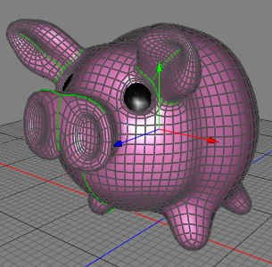
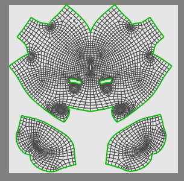

Unwrap UV Tool
The unwrap tool is a very powerful tool when it comes to assign UV coordinates to complex objects like humane characters. The unwrap algorithm therefore minimizes the distortion of the texture on the surface.
 
Unwrapped polygon object.
Modes
The unwrap uv tool can only be applied to raw polygon objects.


The first thing you have to do before you use the unwrap tool is to assign the seams (the green edges in the image above). At the seams the mesh will tear up when the mesh is unwrapped. After you have assigned the seams you can perform the "Tools->UV->Unwrap UV" tool. In the UV editor you can now see the unwrapped mesh. With help of the pinned UV coords you can further influence the result of the unwrapped mesh.
Please also check out the Unwrap tutorial for step by step instructions on real world problem.
Keys
- none
Properties
- none